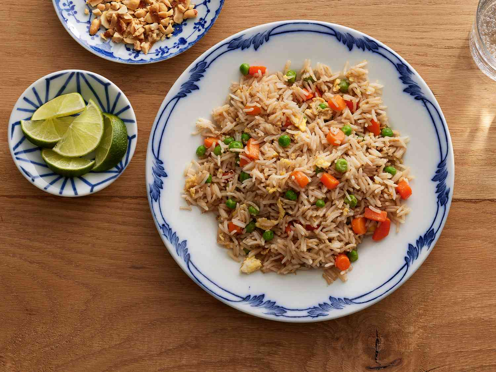

Fried Rice Recipe

Quick and easy to make fried rice recipe featuring mixed vegetables, eggs and soy sauce.
Ingredients
- ⅔ cup chopped baby carrots
- ½ cup frozen green peas
- 2 tbsp vegetable oil
- 1 minced clove garlic
- 2 large eggs
- 3 cups white rice
- 1 tbsp soy sauce
Steps
- Place carrots in a saucepan and fill with water.
- Boil for 3-5 minutes while mixing in peas.
- Drain the water.
- Heat the mixture over high heat. Pour in vegetable oil, stir in carrots, peas and garlic.
- After 30 seconds, add eggs. Stir quickly to scramble and mix with the vegetables.
- Stir in cooked rice. Drizzle soy sauce while stirring to coat the rice.